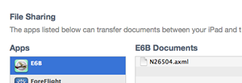

Saving and Sharing Custom Weight and Balance
When you create a new custom weight and balance template, the data is saved in the documents section for the E6B application, and can be downloaded and shared with other users.
To get the list of custom aircraft
Plug your device into your computer and open iTunes.
On the left-hand bar under "Devices", select your device.
In the top tab bar above the summary for your device, select "Apps". You will find a section labeled "File Sharing" below the list of applications on your device. Select "E6B".
Each custom aircraft template will be listed as the name of the aircraft (typically the tail number) followed by the '.axml' extension. From here you can copy in new custom aircraft templates from other devices or other users, or copy custom templates out to share with other users.